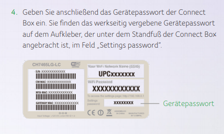
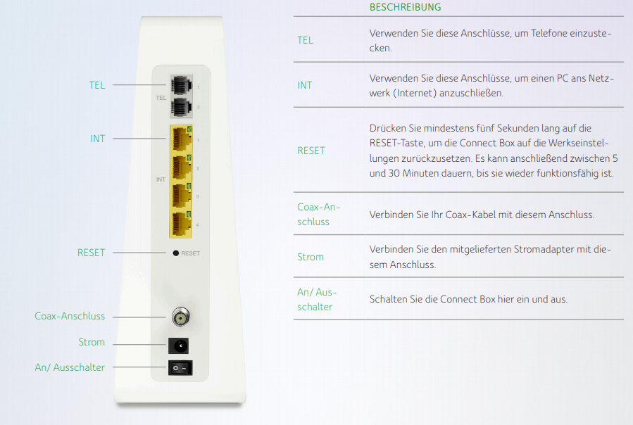

Hallo
ich möchte meinen NAS auch von außerhalb erreichen und müßte deswegen einige Änderungen vornehmen. Leider akzeptiert die Seite aber das Passwort nicht. Gibt es eine Möglichkeit dieses herauszufinden?
Hey @SchlaWol69
Wenn die Einrichtungsseite der Connect Box (192.168.0.1) das Passwort nicht akzeptiert, würde ich die Box einfach mal zurücksetzten. Achte aber darauf, dass du das Einstellungs- bzw Gerätepasswort verwendest und nicht das W-Lan Passwort, solltest du es noch nicht verändert haben.

LG NTM
Bearbeitet von NTMvor 22 Minuten schrieb NTM:Hey @SchlaWol69
Wenn die Einrichtungsseite der Connect Box (192.168.0.1) das Passwort nicht akzeptiert, würde ich die Box einfach mal zurücksetzten. Achte aber darauf, dass du das Einstellungs- bzw Gerätepasswort verwendest und nicht das W-Lan Passwort, solltest du es noch nicht verändert haben.
LG NTM
Danke! Mit 'zurücksetzten' meinst Stromkabel raus/rein?
Nein, nicht nur ausschalten, einschalten, sondern wirklich zurücksetzten über die "Zurücksetzten" bzw "RESET" Taste auf der Rückseite:

Solltest du Einstellungen bereits verändert haben, dann gehen diese Änderungen dadurch auch verloren.
Bearbeitet von NTMvor 14 Minuten schrieb NTM:
Danke! Werde ich morgen probieren. Heute ist es schon etwas spät, meine Frau und die Tochter kommen bald heim, und wenn dann das Internet nicht funktioniert.........da geht die Welt unter. :-)
Hallo, komme bei der Seite auch nicht rein.
nach der Passwort Eingabe bleibt das Feld grau hinterlegt.
connect box habe ich bereits resetet ohne Erfolg.
Kann Jemand helfen?
danke schon mal
Hi @asim1979
stellst du die Verbindung direkt per LAN her oder verbindest du dich über WLAN mit der Modemoberfläche?
Probier es mal mit einer direkten Kabelverbindung, falls du es bisher per WLAN versucht hast.
Mia_
Hallo
Die häufigste Ursache, wenn der Reset nicht klappt ist das der Knopf zu kurz gedrückt wird.
Immer so lange drücken bis die Lichter am Modem alle aufleuchten und dann erst den Reset Knopf loslassen.
{kind=link}
{kind=link}